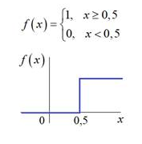
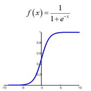
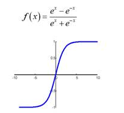
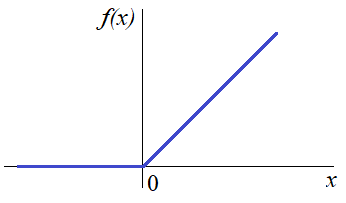
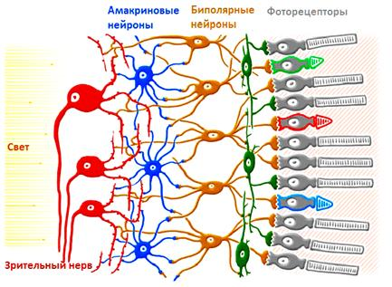
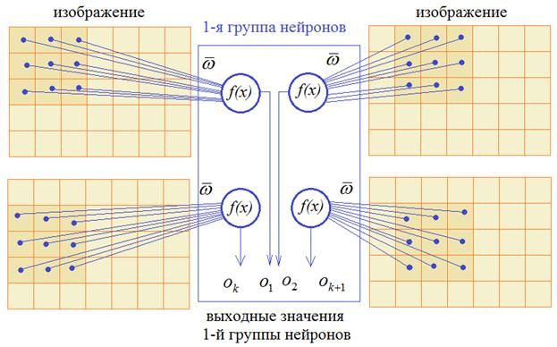

Перцептрон
Простейшая НС – персептрон, представляет собой упрощенное отражение работы биологической сети, состоящей из нейронов, соединенных между собой дендридами и аксонами:
Простейшая модель Перцептрона
Это классический пример полносвязной сети прямого распространения. Здесь каждый нейрон предыдущего слоя связан с каждым нейроном следующего слоя. А сигнал распространяется от входного слоя к выходному, не образуя обратных связей.
Каждая связь между нейронами имеет определенный вес и, сигнал, проходя по ней, меняет свое значение в соответствии с этим весом:

Устройство нейрона
Сам по себе нейрон – это сумматор входных сигналов, который, затем, пропускает сумму через функцию , называемую функцией активации. Выходное значение этой функции и есть выходное значение нейрона.

Алгоритм Back propagation
В относительно маленьких нейронный сетях можно подобрать веса связей вручную Но при увеличении числа нейронов и связей, ручной подбор становится попросту невозможным и возникает задача нахождения весовых коэффициентов связей нейросетей. Этот процесс называют обучением нейронной сети.Самым популярным подходом к обучением нейросетей является алгоритм обратного
распространения ошибки (англ. Back propagation), который в свою очередь базируется на методе градиентного спуска.
Градиент - это вектор, указывающий направление и скорость изменения функции.
Градиент вычсляется по следующей функции:
а "f'(vout)" - производная функции в точке полученного вывода нейросети.
Посчитав локальный градиент, мы можем найти необходимое изменение весов связей,
перемножив локальный градиент на текущее значение связи.
Прокрутив этот алгоритм несколько тысяч раз мы сможем верно обучить нейросеть.
Функции активации
На данный момент существует несколько сотен различных вариантов. Некоторые из них эффективные, другие уже устарели. Одни используются для задач классификации, другие для прогнозирования событий. На данный момент не существует общепризнанного, лучшего варианта, а поэтому выбор активационной функции - одна из важнейших стадий создания структуры сети.Самые известные и эффективные функции активации:
Пороговая функция

Самая классическая и одновременно самая старая функция активации - пороговая:Функция принимает значение 1 (активирована), когда x > 0 (граница), и значение 0 (не активирована) в противном случае. Всё очень просто и понятно, но такой подход имеет свои минусы: так f(x) может принимать только два разных значения, а если потребуется больше? Также нейрон с такой активационной функцией невозможно обучить, потому что, как было описано выше, значения весов изменются в зависимости от их производной, а в этой функции производная всегда равна 0.
Сигмойда

Сигмоида выглядит гладкой и подобна ступенчатой функции. Рассмотрим её преимущества.Во-первых, сигмоида — нелинейна по своей природе, а значит возможно её обучение, так как производная не равна 0. Еще одно достоинство такой функции — она не бинарна, что делает активацию аналоговой, в отличие от ступенчатой функции. Сигмоида действительно выглядит подходящей функцией для задач классификации. Сегодня сигмоида является одной из самых частых активационных функций в нейросетях. Но и у неё есть недостатки, на которые стоит обратить внимание. Вы уже могли заметить, что при приближении к концам сигмоиды значения Y имеют тенденцию слабо реагировать на изменения в X. Это означает, что градиент в таких областях принимает маленькие значения, а это значит, что обучение будет происходить крайне медленно.
Гиперболический тангенс

Еще одна часто используемая активационная функция — гиперболический тангенс.
Гиперболический тангенс очень похож на сигмоиду. И действительно, это скорректированная сигмоидная функция.
Поэтому такая функция имеет те же характеристики, что и у сигмоиды, рассмотренной ранее.
Функция ReLu

Это одна из самых популярных функций активации на сегодняшний день и, кроме того, не уменьшает локальные градиенты при переходе от слоя к слою.
Поэтому часто используется при deep learning – обучении НС с большим числом слоев.
Также ReLu менее требовательно к вычислительным ресурсам, чем гиперболический тангенс или сигмоида,
так как производит более простые математические операции. Поэтому имеет смысл использовать ReLu при создании глубоких нейронных сетей.
Свёрточные нейронные сети
Одна из основных сфер применения нейронных сетей является классификации графических образов (отличать кошку от собаки, самолет от автомобиля, мужчин от женщин и т.д.), делать стилизацию изображений, выполнять их раскраску, генерировать новые графические образы и делать много других интересных вещей с изображениями. Обычной перцептрон не слишком хорошо справляется с этими задачами. Когда речь заходит об обработке изображений, то используется особая архитектура – сверточные нейросети. Общая идея архитектуры таких сетей была подсмотрена у биологической зрительной системы. Ученые выяснили, что дендриды каждого нейрона соединяются не со всеми рецепторами сетчатки глаза, а лишь с некоторой локальной областью. И уже дендриды всей группы зрительных нейронов покрывают сетчатку глаза целиком:  Математики обобщили эту структуру и предложили следующее решение. Входной сигнал изображения подается на вход нейрона только в пределах ограниченной области, как правило, квадратной, например, 3х3 пикселей. Затем, эта область смещается вправо на заданный шаг, допустим, 1 пиксель и входы подаются уже на второй нейрон. Так происходит сканирование всего изображения. Причем, весовые коэффициенты для всех нейронов этой группы – одинаковые. После этого сканирование изображения повторяется, но с другим набором весовых коэффициентов. Получаем вторую группу нейронов. Затем, третью, четвертую и в общем случае имеем n различных групп. Так формируется первый скрытый слой нейронов сверточной НС.  Каждая «маска» ищет свои признаки, после чего картинка собирается заново и на основе найденных признаков нейросеть делает выводы.Для изучения более подробной информации, рекомендую прочитать книги: «Машинное обучение» - Бринк Х., Ричардс Д., Феверолф М
или «Крупномасштабное машинное обучение вместе с Python» - Шарден Б., Массарон Л., Боскетти А.